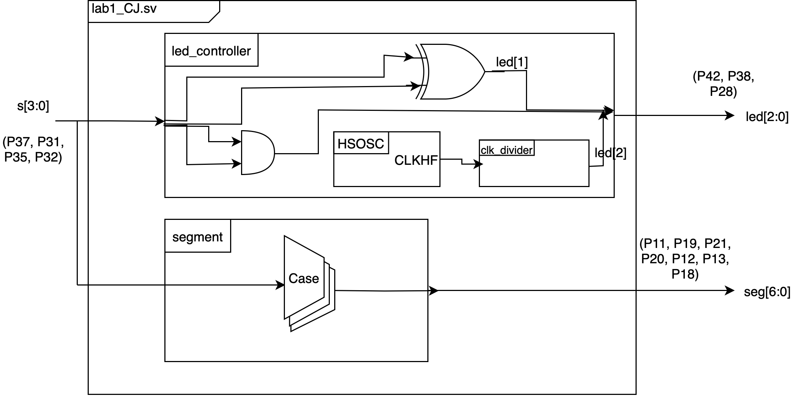

E155 Labs
Lab 1 - Board Assembly and Testing
Introduction
In this lab I implemented a design on the FPGA board to demonstrate the functionality of the on-board high-speed oscillator, LEDs, and the 7-segment display. The high speed oscillator was configured and divided down using a counter to achieve a blinking frequency of ~2.4 Hz. Combinational logic was used to control the 7-segment display and other LEDs based on the counter output.
Design and Testing Methodology
The design was implemented using Verilog and tested on the FPGA board. The high-speed oscillator was configured to drive the blinking LED. Combinational logic was used to control the 7-segment display and other LEDs based on the provided truth tables. The design was tested by observing the oscilloscope trace of the blinking LED and checking all input combinations for the 7-segment display output and other LEDs.
Technical Documentation
The source code for my project can be found at this GitHub repository.
Block Diagram

The block diagram illustrates the overall architecture of the design, including the connections between the FPGA, 7-segment display, and LEDs. The top-level module lab1_CJ is responsible for instantiating and connecting all the sub-modules. The submodules (led_controller and segment) include the logic for controlling the LEDs and the 7-segment display, respectively.
Schematic
The schematic provides a detailed view of the physical connections between the FPGA, 7-segment display, and LEDs. Each switch has a 100k\(\ohm\) pull-up resistor to ensure a defined logic level when the switch is open. The 7-segment display is connected to the FPGA through 162\(\ohm\) current-limiting resistors to ensure current draw within the recommended range. The surface mount LEDs are connected in series with 1k\(\ohm\) resistors to limit the current to a safe level.
According to the data sheet for the Segment Display, the forward voltage is 2.0V. According to the lab manual the ideal current range is between 5-20mA. This means that the 162\(\ohm\) resistors must ensure that the current through the display remains within this range. Given that the 3.3V supply voltage is used, we can calculate the current through the display as follows:
\[ I = \frac{V}{R} = \frac{3.3V - 2.0V}{162 \ohm} \approx 8.13mA \]
Results and Discussion
This lab meets all intended proficiency and excellence specifications. The design was successfully implemented and tested on the FPGA board, demonstrating the functionality of the high-speed oscillator, LEDs, and 7-segment display. The oscilloscope trace confirmed the expected blinking frequency of ~2.4 Hz for the LED, and all input combinations for the 7-segment display were verified against the truth tables.
Below the are screenshots from ModelSim showing the simulation results for the top module and each submodule.

The three screenshots above show the simulation results for the top module (lab1_CJ) and each submodule (segment and led_controller). The waveforms indicate that the design behaves as expected, with the surface mount LEDs and the 7-segment display and other LEDs responding correctly to the input combinations.
Conclusion
The design successfully demonstrated the functionality of the high-speed oscillator, LEDs, and 7-segment display on the FPGA board. The implementation met all proficiency specifications, and the testing methodology verified the design against the provided requirements by checking all possible input combinations. Unfortunately, I was not able to complete the testbench but intend on doing so in the future. I spent roughly 27 hours on this lab.
AI Prototype Summary
The first AI Prototype query I made was to Google Gemini 2.5 Pro. It generated a single module which implements a simple LED blinking functionality using a high-speed oscillator. However, when synthesizing I got an error that the module OSCH was unknown. After asking GPT-4.1 to debug this it gave me several suggestion on how to resolve the error in synthesis.
Here is the System Verilog file Gemini generated:
/**
* @brief Blinks an LED at 2 Hz using the internal 48 MHz oscillator.
* @details This module is designed for a Lattice iCE40 UP5K FPGA.
* It instantiates the internal high-speed oscillator (OSCH) to generate a
* 48 MHz clock. A counter then divides this clock to toggle an LED
* output at a frequency of 2 Hz (0.25s on, 0.25s off).
*
* @param CLK_FREQ The frequency of the internal oscillator in Hz.
* @param BLINK_FREQ The desired blink frequency of the LED in Hz.
*/
module led_blinker #(
parameter CLK_FREQ = 48_000_000, // 48 MHz clock frequency
parameter BLINK_FREQ = 2 // 2 Hz blink frequency
) (
output logic led_o // LED output
);
// The division factor needed to get one toggle every half-period.
// (CLK_FREQ / BLINK_FREQ) gives the counts for a full cycle (on and off).
// We want to toggle at half the cycle period.
localparam HALF_PERIOD_COUNTS = CLK_FREQ / (BLINK_FREQ * 2);
// Calculate the number of bits required for the counter.
// $clog2 calculates the ceiling of log base 2, which gives the bit-width.
localparam COUNTER_WIDTH = $clog2(HALF_PERIOD_COUNTS);
// Internal high-frequency clock signal
logic hf_clk;
// Counter to divide the clock frequency
logic [COUNTER_WIDTH-1:0] counter;
// Instantiate the Lattice iCE40 UltraPlus internal high-speed oscillator.
// This generates the main clock for our logic without needing an external crystal.
OSCH #(
.NOM_FREQ("48.00") // Specify nominal frequency in MHz. Other options: "12.00", "24.00", "36.00"
) u_osc (
.STDBY(1'b0), // Oscillator is not in standby
.HFOSCEN(1'b1), // High Frequency Oscillator is enabled
.CHIPCLKEN(1'b1), // Clock enable for the CHIPCLK-pin
.HFOSCOUT(hf_clk) // High Frequency Oscillator output
);
// Synchronous logic for the counter and LED toggle.
// This block is sensitive to the rising edge of the high-frequency clock.
always_ff @(posedge hf_clk) begin
if (counter == HALF_PERIOD_COUNTS - 1) begin
counter <= '0; // Reset the counter
led_o <= ~led_o; // Toggle the LED state
end else begin
counter <= counter + 1; // Increment the counter
end
end
// Set the initial state of the LED and counter.
initial begin
led_o = 1'b0;
counter = '0;
end
endmoduleLab 2 - Multiplexed 7-Segment Display
Introduction
In this lab I implemented a design on the FPGA board to demonstrate the functionality of a time multiplexed 7-segment display. The design uses the on board high-speed oscillator to create a clock signal, which is then divided down to achieve a refresh rate of approximately 120Hz for the display.
Design and Testing Methodology
The design was implemented and tested using a combination of System Verilog for the hardware description and a testbench for simulation. The testbench generates the necessary clock and reset signals, and applies various input patterns to verify the correct operation of the 7-segment display driver. The submodules were also tested individually to ensure their functionality before integrating them into the top-level design.
Technical Documentation
The source code for my project can be found at this GitHub repository.
Block Diagram
The block diagram illustrates the overall architecture of the System Verilog design. The top module (lab2_CJ) initializes the on board oscillator and instantiates the submodules. The submodules (two_input_led_adder, segment, encoder, and decoder) include the logic for controlling which switches are used, choosing which segments to light up, and generating the output for the LEDs.
Schematic
The schematic provides a detailed view of the physical connections between the switches, FPGA, 7-segment display, and LEDs. Each switch has a 100k\(\ohm\) pull-up resistor to ensure a defined logic level when the switch is open. The 7-segment display and Red LEDs are connected to the FPGA through 1k\(\ohm\) current-limiting resistors to ensure current draw within the recommended range. The PNP transistors are used to switch the common anode of each digit on the 7-segment display and are connected to the FPGA through 1k\(\ohm\) resistors to limit the base current.
Base resistor calculation for PNP transistor: \[ V = 4.3V - V_{\text{difference}}(4.3 - 0.7)V = 3.6V \]
\[ V = IR \implies R = \frac{V}{I} = \frac{3.6V}{0.008A} \approx 450\Omega \]
Thus, we need a resistor value of at least 450\(\ohm\) to ensure the base current does not exceed 8mA. I chose to use a 1k\(\ohm\) resistor to be safe.
LED resistor calculation: \[ I = \frac{V}{R} = \frac{4.3V - 1.7V}{1k\Omega} = 2.6mA \]
Segment resistor calculation: \[ I = \frac{V}{R} = \frac{4.3V - 2.0V}{1k\Omega} = 2.3mA \]
Results and Discussion
Unfortunately, I was not able to get the segmentation design to work on the FPGA board. However, I was able to simulate the design in ModelSim and verify that it works as intended. Below the are screenshots from ModelSim showing the simulation results for the top module and each submodule.
After extensive debugging I determined that the anode1 and anode2 signals were being oscillated at a desired frequency. In addition each of the seg[0] - seg[6] signals were being driven to the correct values based on the input switches. However, despite this the 7-segment display is always on. This is becuase the base is always getting a low input which means the transistor is always on.
Conclusion
In conclusion, while I was unable to implement the segmentation design on the FPGA board, the simulation results in ModelSim confirmed the design’s functionality. The screenshots provided demonstrate the expected behavior of the top module and its submodules, validating the design approach.
Hours in lab: 18
AI Prototype Summary
The AI prototype I used for this lab was ChatGPT 4.1. I used it to generate the System Verilog code for the top module of the design with the given prompt. With both prompts the code generated was able to synthesize without any substantial errors. However, the design did not make use of the on board oscillator. When looking at the Netlist Analyzer the design was far different from the one I created. Additionally, the design toggled the segments at every clock cycle which would not be visible to the human eye.
When Passing in no context to ChatGPT 4.1 it generated the following System Verilog code for the top module:
module multiplexed_seven_segment (
input logic clk, // Clock input for multiplexing
input logic rst_n, // Active low reset
input logic [3:0] in0, // First 4-bit input
input logic [3:0] in1, // Second 4-bit input
output logic [6:0] seg0, // Seven segment output for first display
output logic [6:0] seg1 // Seven segment output for second display
);
// Internal signals
logic sel; // Multiplex selector
logic [3:0] mux_in; // Selected input
logic [6:0] decoded; // Decoded output
// Multiplex selector flips every clock cycle
always_ff @(posedge clk or negedge rst_n) begin
if (!rst_n)
sel <= 1'b0;
else
sel <= ~sel;
end
// Select input based on sel
always_comb begin
mux_in = (sel) ? in1 : in0;
end
// Seven segment decoder (common anode: segment ON = 0)
always_comb begin
case (mux_in)
4'h0: decoded = 7'b0000001;
4'h1: decoded = 7'b1001111;
4'h2: decoded = 7'b0010010;
4'h3: decoded = 7'b0000110;
4'h4: decoded = 7'b1001100;
4'h5: decoded = 7'b0100100;
4'h6: decoded = 7'b0100000;
4'h7: decoded = 7'b0001111;
4'h8: decoded = 7'b0000000;
4'h9: decoded = 7'b0000100;
4'hA: decoded = 7'b0001000;
4'hB: decoded = 7'b1100000;
4'hC: decoded = 7'b0110001;
4'hD: decoded = 7'b1000010;
4'hE: decoded = 7'b0110000;
4'hF: decoded = 7'b0111000;
default: decoded = 7'b1111111;
endcase
end
// Latch decoded value for each output on alternate clock edges
always_ff @(posedge clk or negedge rst_n) begin
if (!rst_n) begin
seg0 <= 7'b1111111;
seg1 <= 7'b1111111;
end else begin
if (sel)
seg1 <= decoded;
else
seg0 <= decoded;
end
end
endmoduleWhen passing in context of the previous lab ChatGPT 4.1 generated the following System Verilog code for the top module:
module seven_seg_mux (
input logic clk, // Oscillator clock input
input logic [3:0] in0, // First 4-bit input
input logic [3:0] in1, // Second 4-bit input
output logic [6:0] seg0, // First 7-segment output
output logic [6:0] seg1 // Second 7-segment output
);
logic [3:0] mux_in;
logic [6:0] seg_out;
logic mux_sel;
// Simple clock divider for multiplexing (you may adjust division factor)
logic [15:0] div_cnt;
always_ff @(posedge clk) begin
div_cnt <= div_cnt + 1;
mux_sel <= div_cnt[15]; // Use MSB for slow mux select signal
end
// Multiplex input selection
always_comb begin
mux_in = mux_sel ? in1 : in0;
end
// Instantiate the seven segment decoder
seven_segment_decoder decoder_inst (
.bin_in(mux_in),
.seg_out(seg_out)
);
// Latch outputs for display persistence
always_ff @(posedge clk) begin
if (mux_sel)
seg1 <= seg_out;
else
seg0 <= seg_out;
end
endmodule